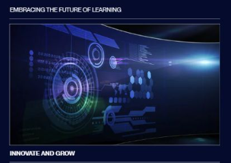

Day One: Reframe the Story
Earlier this month, my team and I were laid off from Thumbtack. I gave myself a rule for the next 30 days: treat 9–5 like a job I own. No doom‑scrolling. No drifting. Just daily reps on the skills that matter.
Build the Engine, Not Just the Résumé
Instead of sending the same PDF everywhere, I built AI‑powered, role‑specific resumes and started logging my work in public. I set up two websites to sharpen front‑end fundamentals and wrote draft copy with AI, then edited everything for my voice.

Side projects that teach: rebuilding game UX sharpened my design and systems thinking.
Stack the Skills
I mapped a curriculum and shipped at least one artifact per day:
- Earned HubSpot certifications in Inbound Marketing, Service Hub, Revenue Operations, and SEO.
- Completed Google Cloud Skills Boost’s Introduction to Generative AI badge.
- Drafted 40+ knowledge base articles to help businesses win with online advertising.
- Compiled a catalog of 100 AI tools—with use cases, pros, and cons.
- Built a Python ROI calculator for service pros.
- Created an AI‑powered media visualizer synced to music with interactive controls.
A living instrument: the visualizer responds to audio and user input in real time.
Design studies and dashboards—small bricks that make big walls.

High-level dashboard experiments showcasing AI integration.
Ship Words, Too
I drafted a LinkedIn article on weaving AI into support and tech roles, plus a longer essay on the hidden costs of layoffs and the ROI of reskilling. Writing clarified the frameworks I was building.
Operate Like a Team of One
I built lightweight workflows for content and project management, kept a personal knowledge system, and iterated on brand experiments using Photoshop, Illustrator, and AI tools. Consistency beat intensity.
What Changed
This month wasn’t just about skills; it was about posture. I became faster at scoping, better at prompts, and calmer under ambiguity. I practiced conversational AI and voice interfaces, experimented with social/blog automation, and strengthened time management in an unstructured environment.
Call to Build
If you’re hiring: I’m bringing this momentum, playbook, and energy to the next team I join. If you’re exploring AI, digital marketing, or emerging tech—let’s talk. I’m happy to share templates, prompts, and systems.